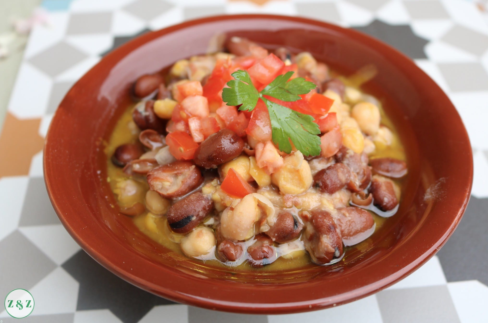

This dish is very popular in the middle eastern countries and in some countries withing North Africa,such as Egypt for example. This dish mainly originated from Sham (The heart of Damascus,Syria), to mention that this spice that uses olive oil, garlic, and lemon juice is a base for so many other dishes in Syria as well! Despite it going under the stimulus affect, the best place to enjoy it with every-single-step done correctly and with the correct ingredients would be only Damascus! The main capital of Syria(As well as my home city!)
Foul is a dish that people eat mostly as breakfast and with the family gathered together! This dish is only eaten hot, and must have some red tea to go with it for the best experience:D ~hehe~ Alot of times it's a main dish during Eid, and a side dish during Ramadan! It brings joy and happiness with it! The beans must be soft after boiled as well as the Hummus if cooked with it, otherwise it's not right! The only way to eat this dish is with Peta bread,bread comes first!
Picture From:
Zaatar And Zaytoun| Ingredients | Side kicks to go on the side: | ||
|---|---|---|---|
| Foul beans | Garlic | Pickles(optional) | Pickled Turnip(optional) |
| Salt(the only spice) | Lemon juice | Green/White onion(optional) | Tahina sauce(optional) |
| Parsley | Tomatoes | Peta bread! | Red Tea |
| Drown it with olive oil! | |||
Source:My mother~
Video from:
CHEF OMAR شيف عمر(Youtube Channel)
Video Title:شيف عمر | فول يوم الجمعة سر نكهة الفول الشامي بزيت وبلبن 😍🤫| فوازير الشيف عمر
URL:https://www.youtube.com/watch?v=CBN9ZQQawrA
My 9 second video is at: 18:55
Published in: Apr,22,2022
Tala loves strawberries, enjoys gaming, and playing around while listening to music~yay me!